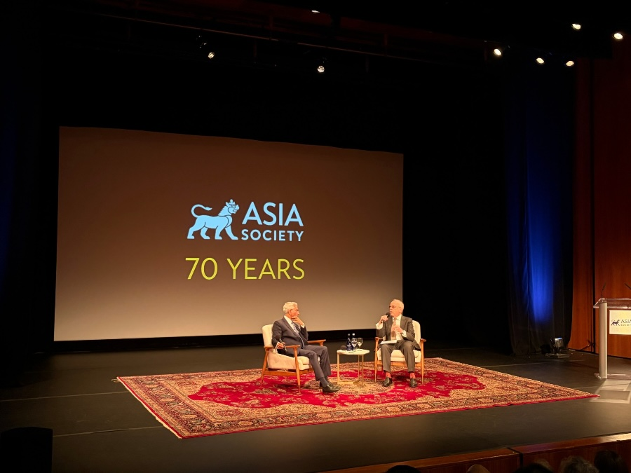
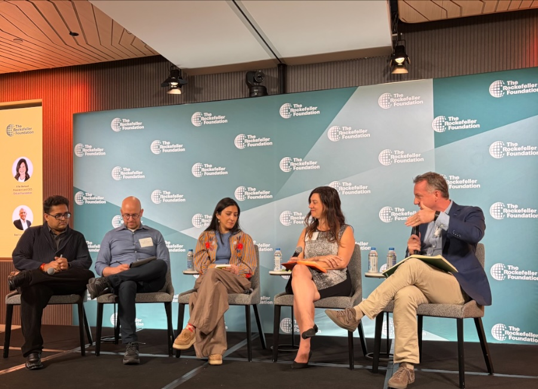
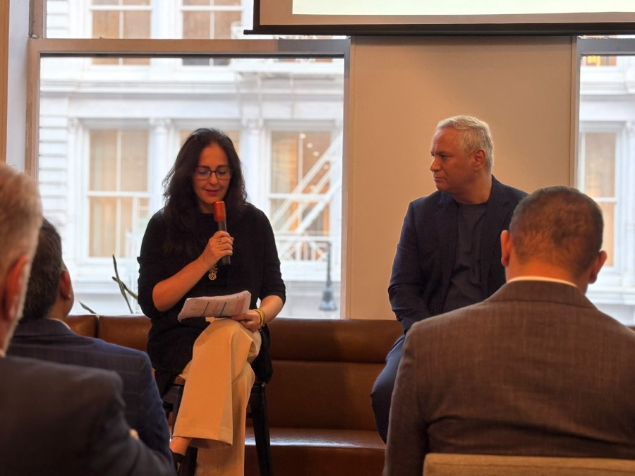
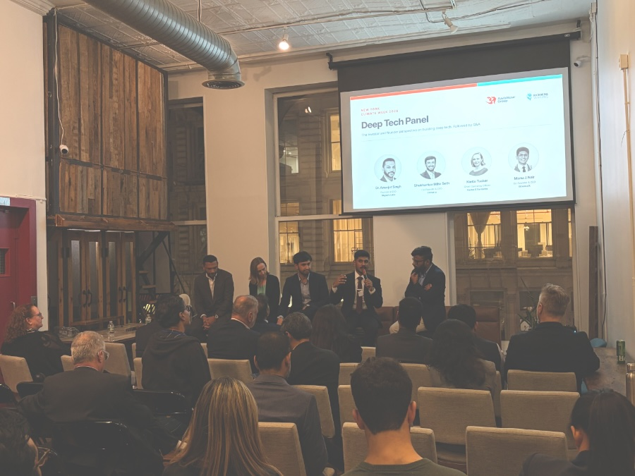

Perspectives from New York Climate Week 2026
An expansive NYCW 2026 hearing perspectives from across corners of our world on its seemingly simultaneous march towards progress and doom. My inconsequential submissions on consequential topics…
On our state of affairs
Grateful to hear from India's EAM Jaishankar who painted a picture of a churning world driven by the reordering of global economies. Amidst this churn and breakdown of diplomatic norms, a balancing act is taking place between finding agility to build new ties and seeking stability to preserve the reputation of a trusted partner. It's a competitive landscape in statecraft too, I hear.

On our AI times
Conversation abounded on steering some of the AI investment tide towards the developing world, where optimism for AI is highest. Silicon Valley companies are paying Bay Area denizens to wear head-mounted cameras to collect data on potential humanoid tasks… Meanwhile, the question of who will build AI use cases for the Global South, for its informal economy, for its farmers and laborers and raise potential is imperative and filled with opportunity.

On impact investing
Audrey Selian, our sincere gratitude to you, led an insightful conversation with Vineet Rai on the evolution of impact since his start in 2002. Thanks to Ankit Anand and Tarun Mehta and the group of extraordinary entrepreneurs sharing their story of building tomorrow's technology at our event: Manu J. Nair, Kiette Tucker, Shubhankar Mihir Seth, and Amarjot Singh, PhD.

